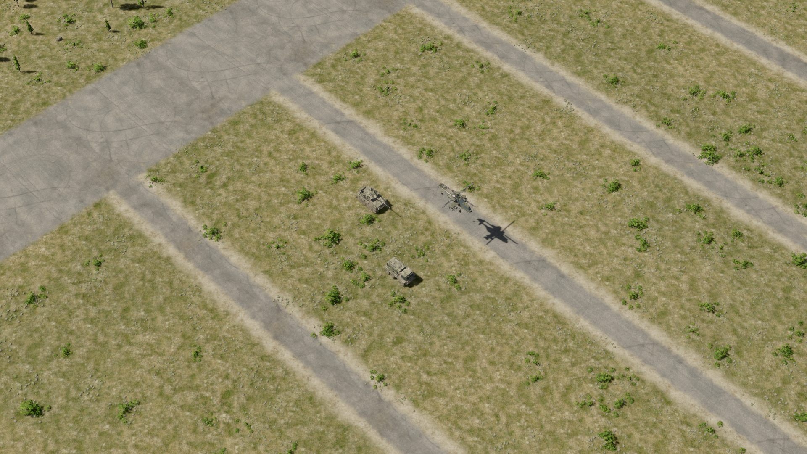
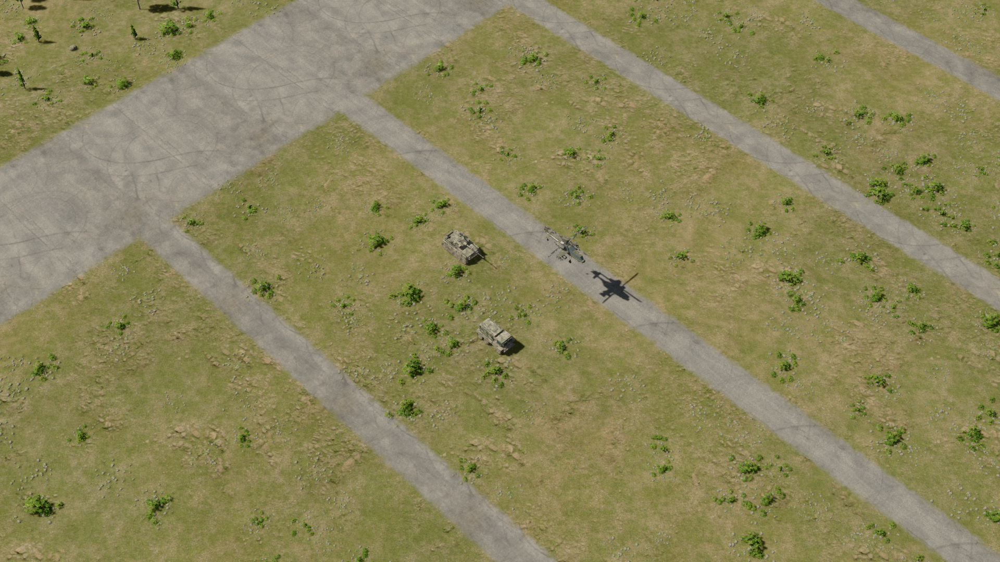
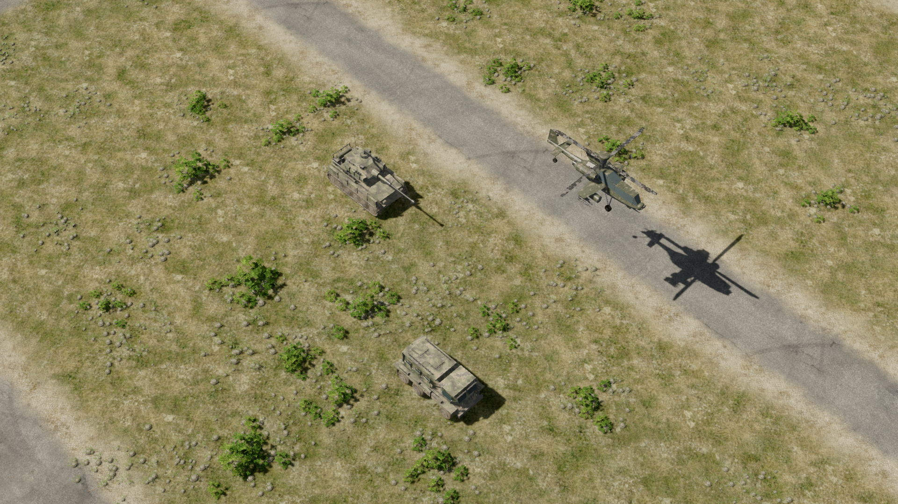
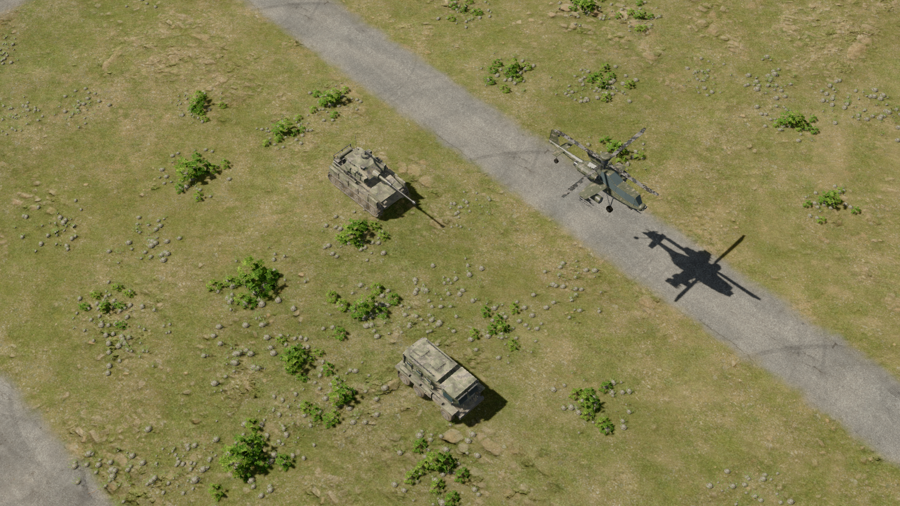

Earlier study. The latest terrain variations are applied to the main game and training ground. Open the latest comparison.
Native 1920×1080 captures. Both versions share the same fixed camera, sunlight, scenery, vehicles and dynamic shadows. New meadow and shoulder albedos were made with OpenAI’s built-in image generation; companion generated heights supply approximate shallow normals and cavity shading. The terrain geometry and movement rules are unchanged.
Open View Photoreal Ground Demo.cmd in the project folder to explore. Wheel: zoom. WASD / arrow keys: pan. F10: show the normal HUD. Escape: menu. The comparison scene is paused. Use View Current Ground Demo.cmd for the previous materials. Ordinary game launches retain the current terrain.
Drag to compare the same scene: current terrain on the left, generated materials on the right.


Open current terrain at full resolutionOpen generated material study at full resolution
Drag to compare the same scene: current terrain on the left, generated materials on the right.


Open current terrain at full resolutionOpen generated material study at full resolution
The height maps are artistic approximations rather than measured PBR scans. The diffuse images retain small crevice shading. Large trees and rocks remain geometry; no vehicles or moving-object shadows are painted into the ground.
Exact generation prompts · Material settings · Render validation